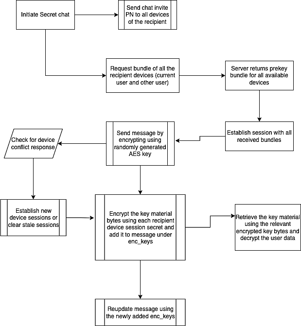

View on GitLab
View on GitLab iZSecretChat Reference
iZSecretChat Reference


iZSecretChat
iZSecretChat is a library to create a end to end encrypted messages. This library uses libsignal-protocol-c , which is a ratcheting forward secrecy protocol that works in synchronous and asynchronous messaging environments.
AES encryption
All symmetric key encryption in our app will be done via AES-256 keys in AES-GCM mode. Any 12 byte deterministic IV will be used for each encryption pass through.
Signal protocol
Signal protocol will be used for the secure key exchange iZSecretChat.
Chat message encryption
For text message encryption, a random AES-256 key generator can be used for the key material (random key for each message). Message should be encrypted using that key and the key material has to be encrypted for all available user sessions.
Message can be encrypted and payload is formed in the following format,
base64_encoded_iv$base_64_encoded_enc_data
Flow chart

Requirements | Features | Installation | Client install time | Building sessions | Encryption | Decryption | Fingerprints | Author | License
Requirements
There is no need to initialize a global
context or do any other setup before usage. iZSecretChat uses
the built-in CommonCrypto library for cryptographic functions. Simply:
import iZSecretChat
Features
- End to End encrypted messages
- Easy to use
- AES-GCM key encryption/decryption
- Signal Protocol encryption/decryption
- iOS, macOS, AppleTV, watchOS, support
Installation
iZSecretChat is available through Zoho Pods Repo. To install it, simply add the following line to your Podfile:
pod 'iZSecretChat'
Client install time
At install time, a iZSecretChat client needs to generate its identity keys,
registration id, and prekeys.
iZSecretChat.initiate()
/* To Upload public identity key, public pre keys and public signed pre key to the server implement `SecretChatAPIHandlerDelegate` protocol */
iZSecretChat.addApiHandler(delegate: self)
RegistrationId, identityKeyPair, prekeys, signedPrekey will be stored in local database.
Building sessions
Building a session with a downloaded pre key bundle
iZSecretChat needs bundle to establish session. Once pre key bundle downloaded from the server it will get processed and session will be establish for recipient with SignalProtocol. Additionaly session will be stored in local database.
/* Requesting bundle from server */
iZSecretChat.requestBundle(for: recipientIds)
/* Load sessions from local for particular user id */
let sessions = RemoteSession.get(for: userId)
Encryption
AES256Key Generation
Symmetric key encryption in iZSecretChat will be done via AES-256 keys in AES-GCM mode. Random 12 byte deterministic IV will be used for each encryption pass through.
/* To Generate AESKey */
AES256Crypter.generateAes256()
Encrypting messages with generated AESKey
let aesEncrypt = AESEncrypt(aesKey: aesKey)
let encrypted = aesEncrypt.perform(message: msgTextEnc)
print(encrypted.message)
Encrypting AES key with signal protocol
AES key is now ready to encrypt with established session.
/* Retrive single session with userId and deviceID */
let session = RemoteSession.get(userId: userId, deviceID: deviceId)
/* Retrive all available sessions for userId */
let sessions = RemoteSession.get(for: userId)
/* Retrive all available sessions for multiple userIds */
let sessions = RemoteSession.get(for: userIds)
/* Encrypting aes key with session */
SecretSession.shared.signalEncrypt(session: session, message: msgData)
Decryption
Check message sender have session
SecretSession.shared.hasSession(name: userId, deviceId: deviceId)
Decrypting in an established session
Once checked sender have session, We can start decrypt the encrypted aes key.
let aesKey = SecretSession.shared.signalDecrypt(senderUserId, deviceId: senderDeviceId, encAesKey: encKey)
Check message sender have session
SecretSession.shared.hasSession(name: userId, deviceId: deviceId)
Decrypting AES Encrypted message with AESKey
let aes = AESEncryptedMessage(message: encMsgText, aesKey: aesKey)
if let decrypted = aes.decrypt() {
print(String(data: decrypted, encoding: .utf8))
}
Fingerprints
It can be beneficial to compare identity fingerprints to protect against man-in-the-middle attacks.
/* Create fingerprint */
let verifySecreteChat = VerifySafety(localIdentity: localPublicKeys, remoteSessions: remoteSessions)
/* Obtain scanned data from other device */
/* Show safety */
verifySecreteChat?.getVerificationDisplayText()
/* Compare scanned fingerprint */
let equal = verifySecreteChat?.verify(code: code)
It’s also possible to create fingerprints from several local and remote identities, e.g. in a group conversation setting.
Legal things
Cryptography Notice
This distribution includes cryptographic software. The country in which you currently reside may have restrictions on the import, possession, use, and/or re-export to another country, of encryption software. BEFORE using any encryption software, please check your country’s laws, regulations and policies concerning the import, possession, or use, and re-export of encryption software, to see if this is permitted. See http://www.wassenaar.org/ for more information.
Author
Senthil Kumar R, senthil.rp@zohocorp.com for Zoho Corporation
License
iZSecretChat is available under the MIT license. See the LICENSE file for more info.
libsignal-protocol-c is copyright (2015-2016) of Open Whisper Systems, and licensed under the GPLv3.